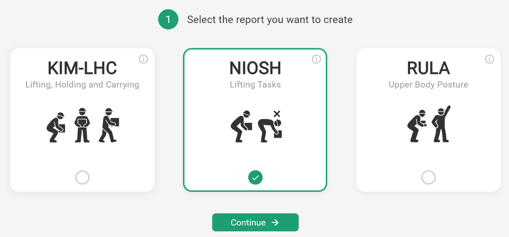
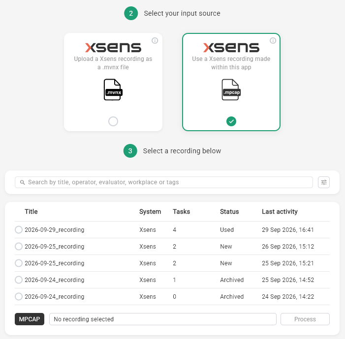
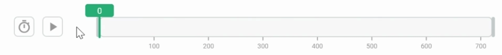
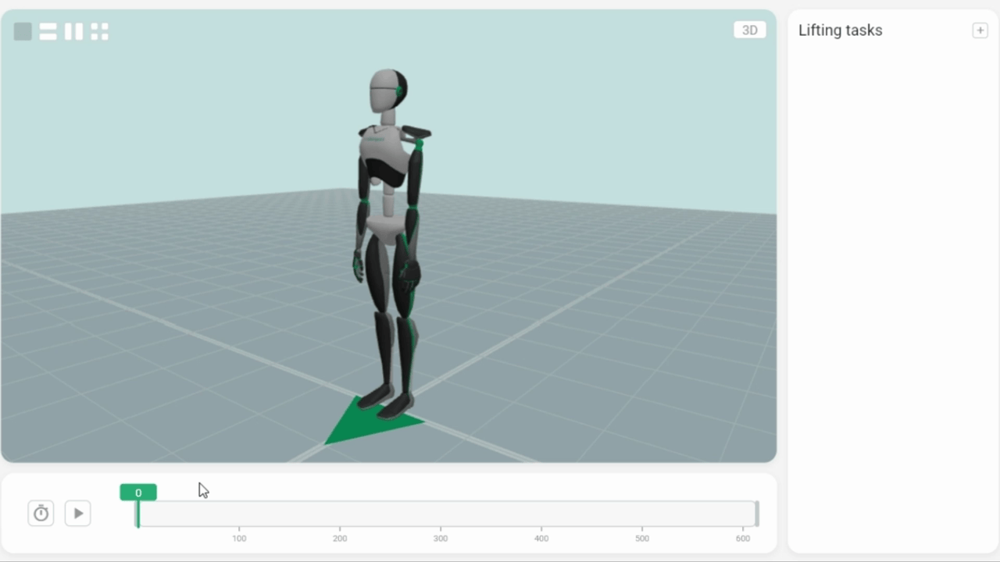

This article walks through the complete process of running a NIOSH assessment in Motionprint Ergo — from selecting the report type to clicking Process. Every screen, field, and control is covered in the order you encounter them, for both ways of providing motion data: uploading an .mvnx file, or selecting a recording made in Motionprint Ergo.
1 Overview
A NIOSH assessment in Motionprint Ergo spans three separate screens and five numbered steps. The table below shows the complete flow:
| Step | Label in the app | Screen |
|---|---|---|
| 1 | Select the report you want to create | Create page |
| 2 | Select your input source | Input Source page |
| 3 | Setup your input source | Input Source page (same screen) |
| 4 | Trim the file and specify lifting tasks | Input page — 3D viewport on left, lifting tasks on right |
| 5 | Provide task information | Input page (same screen, scrolls down from step 4) |
After completing all five steps, the Process button at the bottom of the input page becomes active. Clicking it submits the assessment and navigates you to the report.
If you stop a live recording and choose New Project in the Save Recording window, then pick NIOSH, steps 1 to 3 are skipped: you land directly on the input page with the recording's trim range, tasks and metadata already filled in. See Record Xsens Data Live.
2 Select Report
The assessment begins on the Create page, where you choose which type of report to run. Select the NIOSH tile from the available options, then click Continue to proceed to the next step.
NIOSH assesses the load in a lifting task. If the demand comes from sustained or awkward posture rather than from weight, RULA will tell you more, and KIM-LHC covers holding and carrying alongside lifting. Nothing stops you running more than one on the same recording — they answer different questions, and a task can easily be acceptable under one and problematic under another.

3 Select Input Source
The next screen is the Input Source page, where you choose where the motion data for this assessment comes from. Two tiles are available:
| Tile | Use it when |
|---|---|
| Upload a Xsens recording as a .mvnx file | You recorded the task in Xsens MVN Analyze and exported it as an .mvnx file. |
| Use a Xsens recording made within this app | You recorded the task with live recording in Motionprint Ergo, so it is stored in your Recordings Database. |
Whichever you choose, the NIOSH calculation runs exactly the same way. See .mpcap vs .mvnx Explained for how the two formats compare.
4 Setup Your Input Source
What happens next depends on the tile you chose.
Uploading a .mvnx file
A file browser opens. Navigate to your .mvnx file and select it. Motionprint Ergo runs a quick structural check, and once the file passes it takes you to the main input page (steps 4 and 5). If the file is invalid or corrupted, an error message tells you what is wrong and you can select another file.
Before importing, export your session from Xsens MVN as a MVNX file. This format preserves all motion data and skeletal information needed for analysis. For a full walkthrough of the export and upload process, see Uploading & Processing Xsens Data.
Selecting a recording
A list of your saved recordings appears, laid out like the Recordings Database and with the same filters to help you find the right one. Archived recordings are included in the list; use the filter to hide them if you prefer. Select the recording you want to assess to continue to the main input page. No validation step is needed, because the recording was captured and checked by Motionprint Ergo itself.

Everything you prepared in the recording carries over to the input page:
- Trim range — becomes the observation window for the assessment.
- Tasks — every task defined in the recording appears as a lifting task, with its start frame, end frame and description.
- Metadata — workplace, evaluator, operator, age, gender, weight, tags and date are pre-filled. The date defaults to the date of the recording.
What a recording can't hold is the NIOSH-specific information per task, such as the load weight and coupling rating. You fill that in per task on the input page.
Anything you change on the input page — the trim, tasks or metadata — applies only to this project. The recording itself stays exactly as it was saved in the Recordings Database, so you can use it again for another report. To change the recording itself, edit it in the recording viewer; see Reviewing & Trimming Recordings.
5 Trim the File and Specify Lifting Tasks
This is the main input page — a new screen with a 3D viewport on the left showing the loaded avatar and a lifting tasks panel on the right. If you selected a recording, the observation window and lifting tasks are already set from that recording; review them here and complete the NIOSH-specific fields for each task. Otherwise, this step is where you define the observation window and mark each individual lifting action.
The 3D viewport and playback controls
The viewport renders the motion capture recording as an animated 3D avatar, with the same camera views (3D, front, side and top) and playback controls used elsewhere in Motionprint Ergo:
- Play/pause button — Start or stop the animation.
- Speed selector — Choose playback speed: 0.5× (half speed), 1× (normal), 2× or 4×.
Below the playback controls is the timeline — a horizontal bar representing the full duration of the recording. You use the timeline to trim the recording and mark lifting tasks. For a full overview of the viewport controls and navigation, see 3D View & Interface Controls.
Trimming the observation window
The observation window defines which portion of the recording is included in the assessment. Anything outside the trimmed range is ignored.
Two draggable vertical handles appear on the timeline:
- Start handle (left) — Drag to set where the observation period begins.
- End handle (right) — Drag to set where it ends.
The region outside the two handles is shown in a shaded colour, indicating that part of the recording is excluded from the assessment. As you adjust the handles, Motionprint Ergo automatically recalculates the lift frequency — the number of lifting tasks divided by the trimmed duration in minutes. Frequency must fall within NIOSH's acceptable range of 0.2–15 lifts/min. If it falls outside this range, a warning is shown and the Process button stays disabled until you correct it.

Example: 5 lifting tasks in a 2-minute observation window gives a frequency of 2.5 lifts/min — within the acceptable range. If the frequency is too low, extend the window or add more tasks. If too high, narrow the window or remove tasks.
The trim range of a recording was set in the recording viewer, possibly before you knew which method you would use it for. Because the lift frequency is calculated from the trimmed duration and the number of tasks, check that it still falls within 0.2–15 lifts/min. If it doesn't, adjust the handles here — the change only applies to this project.
Defining lifting tasks
A lifting task is a distinct lifting action within the observation window. Each task is defined by a start frame and an end frame. Tasks must have a minimum duration of 1.0 second. Overlapping frame ranges between tasks are not permitted. To add one:
- Click and drag on the timeline to highlight a frame range. The selection is shown in the branding colour configured in your settings.
- Click the + button to create a task from that range.
- The task appears in the list on the right. Fill in the required fields:
- Start frame — Auto-populated from your selection; editable.
- End frame — Auto-populated from your selection; editable.
- Description — A label for the task in the report.
- Load weight — Weight of the object being lifted, in kilograms. Set using the slider.
- Coupling rating — Select Good, Fair, or Poor to describe the grip quality.

| Coupling rating | Description |
|---|---|
| Good | Optimal handles or cut-out handholds on a container; comfortable, secure grip with the hand well-wrapped around the object. |
| Fair | Less-than-optimal handles or grip surfaces; moderate difficulty maintaining a firm hold on the object. |
| Poor | No handles; fingers flexed approximately 90° at the knuckle; awkward, unstable, or bulky object with no suitable grip point. |
Tasks from a recording are already in the list when you arrive, with their start frame, end frame and description filled in. Open each one and complete the load weight and coupling rating — these are specific to NIOSH and are not stored in the recording.
You can edit or delete tasks in the list at any time. If you adjust the trim handles to exclude a task's frame range, that task is removed or adjusted automatically.
Additional modifiers
If any additional modifiers are enabled in your NIOSH report settings, they appear in the lifting task editing window, so you set them per individual task alongside the load weight and coupling rating. This applies to tasks that came from a recording as well. The exception is the Extended duration (eM) modifier, which is applied automatically based on the working time you enter in the task information form — no manual selection is needed.
| Modifier | Factor | How it is set |
|---|---|---|
| Two-person lift (Pf) | 0.85 | Set per lifting task in the task editing window. The load is lifted by two workers simultaneously, sharing the weight. |
| Additional physical tasks (Tf) | 0.80 | Set per lifting task in the task editing window. The worker performs other strenuous tasks (carrying, pushing, pulling) in addition to lifting. |
| One-hand lifting (Of) | 0.60 | Set per lifting task in the task editing window. A lift is performed with only one hand instead of two. |
| Extended duration (eM) | Varies | Applied automatically based on the working time entered in the task information form. Applies when the work shift exceeds 8 hours: >8–9 h → 0.97, >9–10 h → 0.93, >10–11 h → 0.89, >11–12 h → 0.85. |
Modifier fields only appear in the lifting task editing window if they are enabled in your NIOSH report settings. If no modifiers are enabled, the task window shows only the standard fields.
Multiple lifting tasks and CLI mode
If you define two or more lifting tasks, Motionprint Ergo automatically switches to multi-task mode. Each task receives a Single-Task Lifting Index (STLI), and the results are combined into a Composite Lifting Index (CLI). This is appropriate when the worker performs several distinct lifting movements at the same workstation.
For a full explanation of how the CLI is calculated, see the Understanding the NIOSH Assessment article.
6 Provide Task Information
Still on the same input page, scrolling below the timeline and task list brings you to the task information form. This collects metadata about the assessment session. Some fields are always shown; others appear or are hidden based on your privacy settings.
If you selected a recording, the metadata fields are pre-filled from that recording — workplace, evaluator, operator, age, gender, weight, tags and date. Review them and fill in anything that is still empty; as with the trim and tasks, changes here apply only to this project.
| Field | Required? | Description |
|---|---|---|
| Workplace | No | Name or description of the workstation being assessed (e.g. "Assembly Line Station 3"). This field is always visible and cannot be hidden in settings. |
| Evaluator | No | Name or ID of the assessor. Can be hidden via the privacy settings. |
| Operator | No | Name or ID of the worker being assessed. Can be hidden via the privacy settings. |
| Gender | No | Worker gender (Male / Female). Can be hidden via the privacy settings. |
| Age | No | Age of the worker being assessed. Can be hidden via the privacy settings. |
| Weight | No | Body weight of the worker being assessed. Can be hidden via the privacy settings. |
| Date | Yes | The evaluation date. Defaults to today's date, or to the date of the recording when you selected a recording as input. Can be changed. |
| Working time | Yes | Total hours and minutes at the workstation per shift. Used to determine the Frequency Multiplier (FM) duration category. |
Working time and duration category
The Working time value determines which FM lookup table is applied. Motionprint Ergo categorises the shift duration automatically:
- Short duration — ≤ 1 hour at the workstation.
- Moderate duration — Greater than 1 hour, up to 2 hours.
- Long duration — Greater than 2 hours.
The correct FM table is selected automatically once you enter the working time.
7 Processing the Assessment
Once all required fields are filled and at least one lifting task is defined, the Process button at the bottom of the input page becomes active. Click it to submit the assessment. If anything is still missing, the app lists exactly which items to complete rather than showing a generic error.
Before processing, Motionprint Ergo also checks the geometry of each lifting task. If the NIOSH equation can't be calculated for a task, the Process button stays disabled and the reason is shown, so you can correct that task before processing instead of finding N/A values in the report.
A loading overlay appears showing progress and current status as the NIOSH calculation runs. Once complete, Motionprint Ergo automatically navigates to the report view, where you can review the Score Overview, Analysis, and Findings tabs. For a full walkthrough of every section in the report, see Reading the NIOSH Report Results.
If an error occurs during processing, an error message is displayed. You are returned to the input page where you can correct the issue and try again.
Making changes after processing
If you are on the report page and want to adjust any input — tasks, task information, or modifiers — click the Edit button on the report page. This returns you to the input page with all your existing settings intact, so you can make changes and re-process without starting over.
Once you're happy with your results, click Save Project to store the assessment in the Projects Database for future reference. If you used a recording as input, it stays in the Recordings Database unchanged, ready to be used for another report. You can archive completed projects or delete duplicates to keep your library organized. See Projects Database for details.